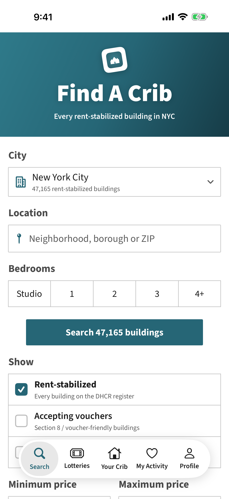
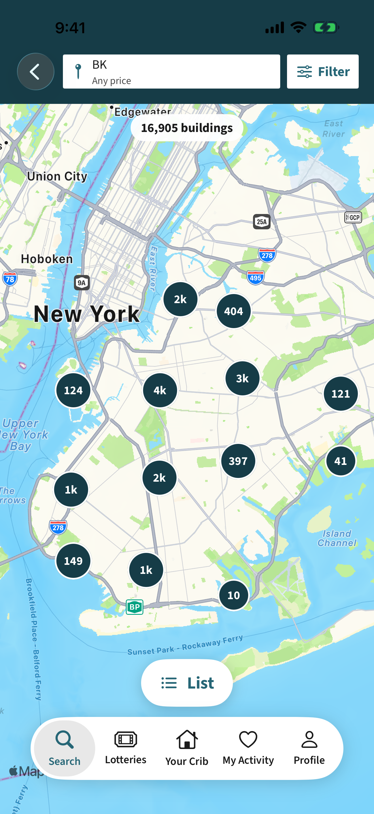
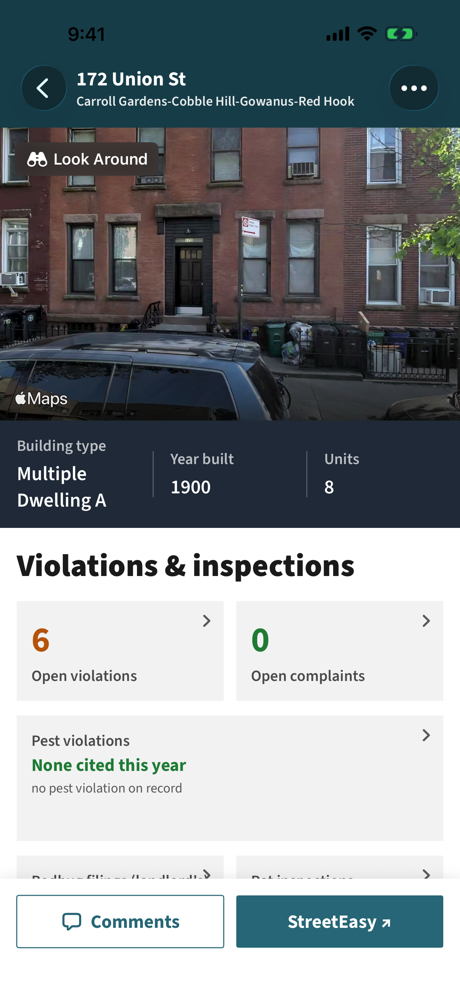
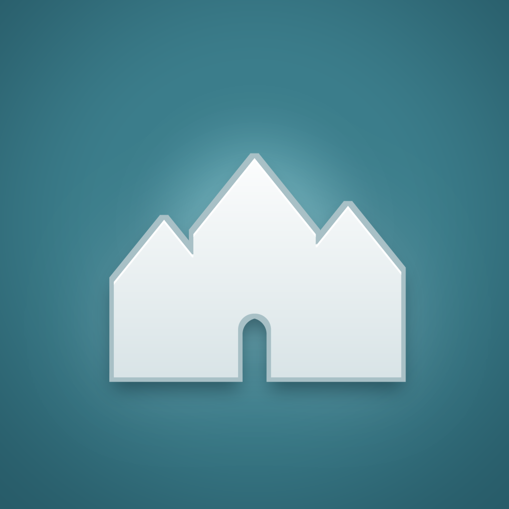
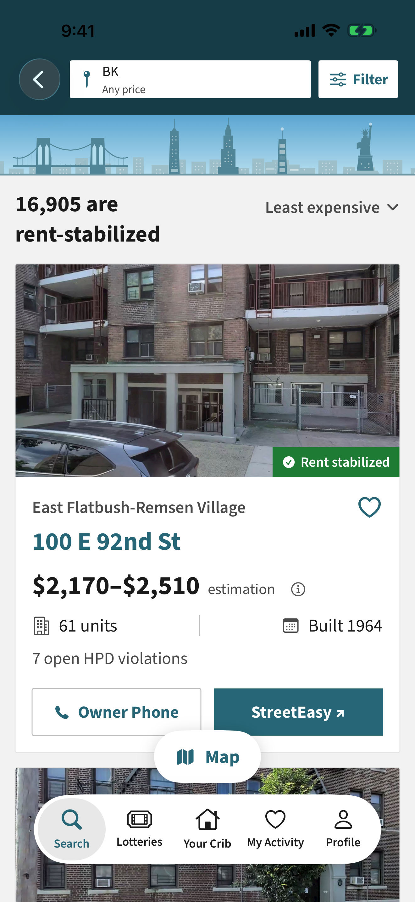

Every
building
rent-stabilized
47,000+ in New York City
All on
one map

Housing
lotteries
open now, in one list

Violations.
Look Around.
Asking rents.
Landlords.
Know
first.

New rent-stabilized listing
now
40 Tehama St, Kensington · $1,200

Find A Crib
On the App Store · findacrib.com